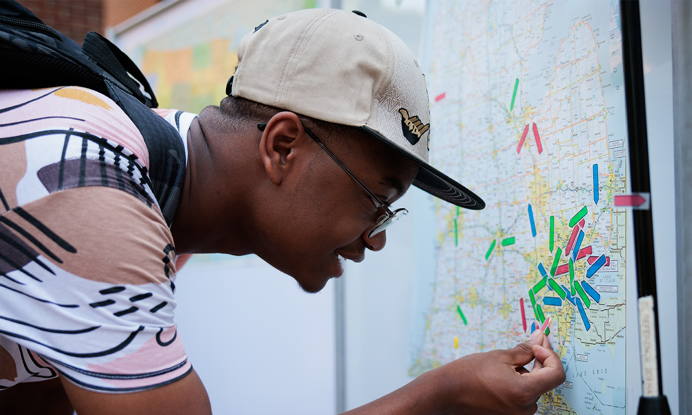
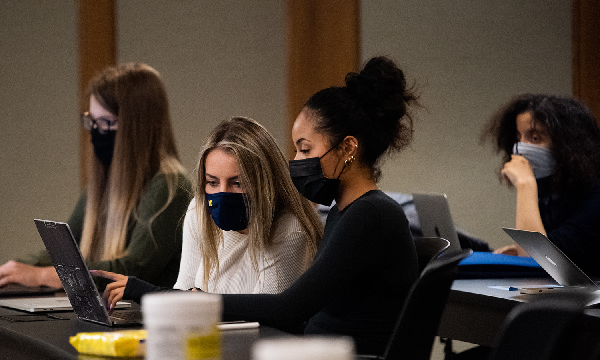

Welcome to the page for Resources to Help Balance School and Life!
This page includes events to help students feel less overwhelmed by school and to promote a healthy lifestyle.
On this page, you can find events intended various demographics, including:
- First Generation Students
- Women+
First Generation Student Events
The First Generation department on campus frequently puts on events to support first-generation students and to create community.
First Generation Events Center for the Education of Women+ Events
The Center for the Education of Women+ hosts a number of events and talks for students of all genders.
Center for the Education of Women+ Events 